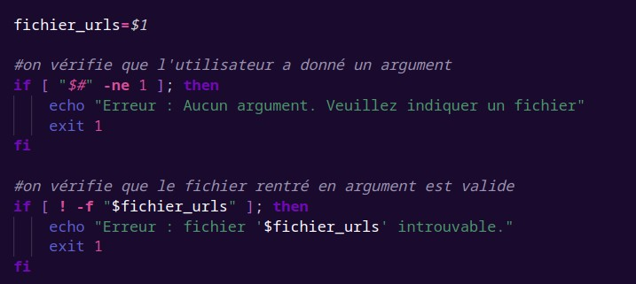
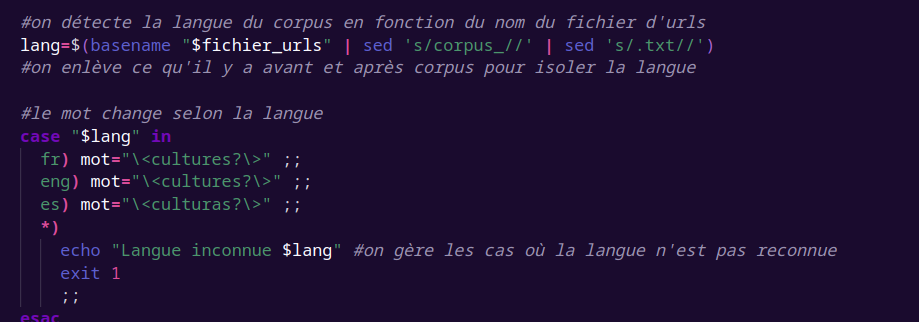
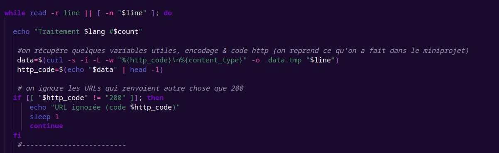
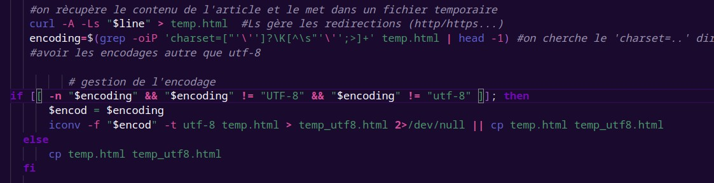
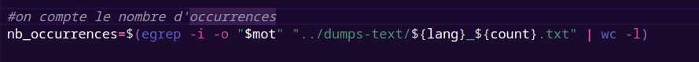
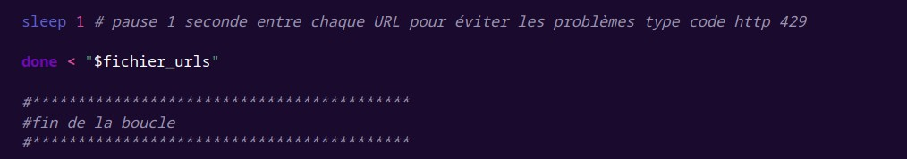

Le script utilisé
Description
Ce script permet de générer les tableaux comportant les données de traitement des URLs pour chaque langue (français, anglais et espagnol). Il ne prend qu'un seul argument : le fichier d'URLs à traiter.
Résultat attendu
On attend donc un tableau indiquant pour chaque ligne l'url, la réponse HTTP renvoyée, l'encodage, le nombre d'occurrences, le contenu html, le contenu textuel, un tableau de concordances (avec les mots à gauche de culture et les mots à droite), ainsi qu'un fichier texte comportant le contexte autour de culture.
Détails du script
On vérifie au début du code que les arguments sont présents et valides.

Ici on gère la langue du corpus à traiter en fonction du nom du fichier rentré en argument.

On gère les cas où le site refuse la requête curl et on ne les traite pas.

On récupère l'encodage de la page, on la met dans une variable pour l'afficher après dans le tableau, puis on convertit en utf-8 s'il n'est pas déjà en utf-8.

Code qui permet de compter le nombre d'occurrences du mot par page.

Le code qui va permettre de remplir le tableau.

Certains sites refusaient la connexion à cause du nombre de requêtes, on met donc une pause de 1 seconde entre chaque url pour régler ce souci.